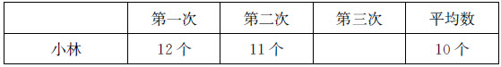
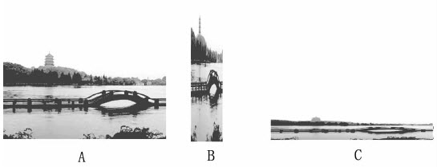
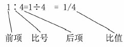

牛献
礼在有效教学蓬勃发展的今天，衡量有效教学的关键指标已经从教师的教学转移到了学生的学习。所谓“有效”，是指通过教师一段时间的教学，学生获得的具体的进步或发展。也就是说，学生有无进步或发展是教学有没有效果的唯一指标。
当前，不少数学课堂表面看起来很流畅，也很热闹。但仔细分析却发现，教学并没有真正把学生作为学习的主体，教师代替学生分析、代替学生探究的现象还比较普遍，教师“重教太过”的现状并未得到彻底改变。有些时候，学生冒出一些新的想法，因为看起来比较幼稚，教师往往不会给予足够的关注，而这样一来，很多学习的可能性就被掐灭了。学生对知识的学习往往是浮光掠影、浅尝辄止，这种表面化的学习掩盖了学生的许多困惑和问题，造成学生缺乏对数学内涵必要而深刻的理解，不利于学生的成长和发展。
陶行知说：“教的法子要根据学的法子来决定。”要提高课堂教学效能，关键是要以学生的学习为核心，教学要精确到与学生的需求相联系。教师要能对学生进行针对性教学。教师只有学会设身处地从学生的角度去思考问题，根据学生的学习需求决定“教什么”和“怎么教”，真切地挠到学生的“痒处”，才能使教学目标“有的放矢”，才能把学生表面化的学习变成充满思考的学习过程。教师在课堂上最重要的任务不是“讲课”，而是“组织学习”。教师要积极观察、聆听，善于诊断，时刻牢记自己是一个“学习的促进者”，而不是一个包办代替者，要尽可能多地激励学生自己学习和相互学习，尽可能多地教到每一个学生的心上，要在学生迷惑处、容易出错处、企及不到处加以点拨、指导和启发。
学习要取得成效，就要保证有一定的学习时间。课堂的时间是一定的，学生的学习精力也是有限的。一节课首先要在时间上统筹安排，将时间花在刀刃上。所谓有效的学习机会，包括设置良好的学习情境、提供有挑战性的学习任务等各个方面。因此，教师如果能够针对学生的实际选择恰当的学习内容，特别是抓住课的重难点，精简非本质的内容，就会使一节课显得既充实又简约，既有骨也有肉。
以“平均数”的教学为例。课标教材把让学生体会平均数的意义、能用自己的语言解释其实际意义作为教学重点，这也是学生学习的难点，是学生真正的“痒处”。
为了让学生体会平均数的意义，在例题教学中，学生通过“移多补少”得到男生队平均每人套中7个、女生队平均每人套中6个后，追问学生：这里的“7”是指男生真的每个人都套中7个吗？这里的“6”是指女生真的每个人都套中6个吗？通过追问让学生体会到它们表示平均每人套中的个数，实际情况是有人套中的比它多，有人套中的比它少，也有人套中的和它一样多。它是移多补少得到的，反映的是这一组学生套圈的总体情况，它是一个抽象的统计数据，而不是真实的原始数据。
在练习环节，也把让学生体会平均数的意义作为重点。补充题目如下。
（1）据统计：我们学校为汶川灾区人民平均每人捐款28元，那么，每位同学一定都捐了28元。
（2）我们学校篮球队队员的平均身高是160厘米，小林想：学校的某个篮球队员身高有可能是155厘米吗？
（3）池塘平均水深为120厘米，小霞想：我身高155厘米，下水游泳一定不会有危险。
小林和小华进行了三场套圈比赛，每人每次都是套15个圈，下面是小林套中个数的统计（如下图所示）。
第一次第二次第三次平均数小林12个11个10个小林

第三次套中的个数怎样呢？
（1）小林第三次套中的个数比10多。
（2）小林第三次套中的个数比10少。
（3）小林第三次套中了10个。
显然，通过这些针对性很强的联系实际的应用练习，能够加深学生对平均数意义的真正理解。
“以学定教”就是坚定以学生为本的理念，根据学生的学情进行教学设计，根据学生课堂反馈的信息调整教学内容。对学生易学已懂的内容，教师在教学设计中要淡化；对学生难学未懂的内容，教师在教学设计中要重视。教师要“教所当教”。学生已会的不讲，学生自己能学会的不讲，讲了学生也不会的不讲；教师集中力量讲学生学习过程中的易混、易错、易漏点，讲学生想不到、想不深、想不透的，讲学生解决不了的。
例如，在教学“年、月、日”一课时，在第一轮教学实践中，主要教学环节是这样展开的：（1）引入时间单位“年、月、日”；（2）介绍一年、一月、一日的规定；（3）观察年历表，了解每个月的天数，知道大、小月，记住每个月的天数以及平年、闰年全年的天数；（4）探索判定平年、闰年的方法；（5）各种形式的巩固练习。
整节课过程目标清楚，加上练习形式丰富，学生看起来还是学得很顺的，但在独立练习时却错误很多。我们注意到这样一个细节：有学生说，“这些知识我早都知道了，没意思”，还有学生说，“为什么有的月是大月有的月是小月，这都是按什么规律来规定的呀？为什么2月份这么特殊呢”。是啊，如果按我们以前的设计来上，这节课充其量是对学生已经知道的一些零散知识点的整理与归纳，学生识记了很多结论性的东西，通过积极主动的思考获取的体验并不多。
问题出在哪里？出在我们没有关注学生的学习现实。对于时间单位年、月、日，学生已经知道了很多，但他们困惑的是什么，想知道的又是什么呢？这节课不应该是一大堆概念的识记，何况，在没有理解的基础上识记，效果是不会好的。通过一番学习，特别是对历法发展过程的了解与研究，我们重新设计了一轮教学思路，如下。
（1）引入时间单位：年、月、日。
（2）交流已有知识经验。鼓励学生提出困惑，如为什么每个月天数不一样，为什么2月份天数特别少，每四年里为什么有一个闰年，等等。
（3）围绕学生提出的问题展开探究。
①介绍：一年、一月、一日的规定。同时说明：地球绕太阳转一圈需要365天5时48分46秒，为了方便，将一年定为365天。
②探究：为什么月份有大小？大小月是如何规定的？
在学生充分观察年历卡、交流发现的基础上简单介绍历法的发展过程，并引入典故。
（4）探究：为什么四年一闰、百年不闰、四百年又闰呢？
引导学生通过计算来探究，正是因为一年的真正时间比365天约多6小时，每四年约多出一天来，因此规定每四年一闰。可是这样一来，每四百年又会亏三天，所以规定每百年不闰，四百年才又闰。
（5）各种形式的练习。
第二次教学实践围绕着学生所想、所惑展开，通过有趣的历史故事和引人思考的数学问题引导学生经历了知识的形成过程。学生学得积极主动，思维充盈着活力。
“数学教学是数学活动的教学，是师生之间、学生之间交往互动与共同发展的过程。”学生的数学学习过程应当表现为一个探索与交流的过程——在探索的过程中形成对数学的理解，在与他人的交流中逐渐完善自己的想法。其中，师生对话是教学过程的核心环节，它对学生学习实践产生重要的引领作用。在这个过程中，教师的主要作用是设置有挑战性的问题，组织、调控和维持讨论的秩序，“倾听——梳理——激疑点拨”，在生成问题处、发现最佳答案处、发现典型错误处、发现思路与方法处重点评议。
以“用字母表示数”的一个教学片段为例：
编儿歌：
一只青蛙一张嘴，两只眼睛四条腿；两只青蛙两张嘴，四只眼睛八条腿；三只青蛙三张嘴，六只眼睛十二条腿；……
你能用一句话就把这首儿歌读完吗？
先让学生独立思考，教师注意收集学生的典型想法。在全班交流时，有序呈现学生的以下想法：
方法一：x只青蛙x张嘴，x只眼睛x条腿。
老师没有作出评价，而是让学生来评价这种方法的优劣。
生：如果x代表一，就成了一只青蛙一张嘴，一只眼睛一条腿，这是一只残废的青蛙。（众笑）
同学们在笑声中明白了“在同一个情境中，一个字母只能代表同一个数”。
方法二：a只青蛙a张嘴，b只眼睛c条腿。
师：这种方法用不同的字母来表示不同的数量，就避免了上面的问题，好不好？
生：这个方法也不好。我也举个例子，a代表一，b代表三，c代表五，就成了“一只青蛙一张嘴，三只眼睛五条腿”，也是一只残废的青蛙。（众笑）
同学们在笑声中又一次明白了必须用字母表示出数量之间的正确关系。
师：你是说这样的写法没有反映出儿歌中几个数量之间的关系，所以不太好。其实这里的b和c分别表示什么？
生：b表示a×2，c表示a×4。
方法三：a只青蛙a张嘴，a×2只眼睛a×4条腿。
……
产生解决问题的需要，是学生自主探究的最大动力。由于“青蛙的只数、嘴巴的张数、眼睛的只数和腿的条数”可以一直不停地数下去，学生自然会产生追求简约的需要。此时，教师提出有挑战性的问题：“你能用一句话就把这首儿歌读完吗？”并给学生留下了充足的自主探究时间，学生根据自己的理解创造出了多种用字母表示的方法，充分展现了学生对情境问题的深入思考，尊重了学生的个体差异。同时，教师收集学生的记录方式，有意识地先呈现错误的方法，再呈现正确的方法，很自然地呈现出学生思维的差异。在这个过程中，教师注意延迟评价，更多地进行生生之间的互动，引发学生之间不同想法的交流、不同思维的碰撞，让学生经历了知识的形成过程，在创造方法和交流想法的过程中，真切体会到用字母表示数字的概括性和优越性。
有效的课堂教学，从动机到结构都是以学生学习为中心来组织，而不是以教师为中心来组织的。应该把学生的学习和成长放在中心位置来考虑教学，让学真正成为教学的核心，让教永远伴随着学生的学，以学定教，少教多学，让学生在这一过程中发展。
课堂智慧
“比的认识”教学实录与思考
【教学内容】
人教版课标实验教材小学数学六年级上册“比的认识”。
【教学思考】
唐代杜牧说：“学非探其花，要自拔其根。”意思是说学习不能停留在表面上，只顾形式上热热闹闹，要寻根究底。那么，怎样让学生高水平地理解“两个数相除又叫做两个数的比”呢？通过课前的学情调研发现，学生对“两个同类量之间的相除关系用比来表示”基本没有学习障碍，原因是这两个量的单位相同，比的结果表示这两个量之间的倍数关系，这很容易被同化到学生已有的认知结构中去。毕竟，学生从二年级就已经接触到“倍数关系”了。但也正是因为对“两个数相除表示倍数关系”太熟悉了，学生反而产生了思维定势，对于“两个不同类的量之间的相除关系用比来表示”就不是很认同了。他们往往认为：“这两个量单位不同，相除的结果不表示倍数关系，怎么能用比来表示呢？”这是学生学习的难点，也是真正的“痒处”。教学中，需要教师针对学生的学习障碍，在学生的“痒处”反复抓挠，帮助学生剥离数学概念的非本质属性，理解概念的本质。
课一开始，联系学生已有的知识经验，教师精心创设了“照片选美”的情境，引导学生观察、比较、交流，得出照片美的程度与长方形的长和宽的倍比关系有关，从而自然地把“比”与“倍比”、“分数”联系起来，从整体上揭示了“比”的本质。学生在应用已有知识的过程中形成了新知识，在建立新概念的同时深化了原有认知。教师在学生初步感知“比”的概念的基础上，抓住知识的本质属性，为学生提供一组相同的“数”，从正、反例的角度让学生经历由表及里的辨析过程，促使学生逐步剔除知识的非本质属性，从干扰因素中辨析出知识的本质内涵——是否具有相除关系，最终将其落实到思维深处。
【教学目标】
1.经历从具体情境中抽象出比的过程，理解比的意义，认识比的各部分名称，会求比值，理解比和分数、除法的关系。
2.感受比在生活中的广泛应用，能利用“黄金比”的知识解释一些简单的生活问题，体会数学的价值。
【教学重、难点】
理解比的意义。
【教学过程】
师：杭州被称作“人间天堂”，在很大程度上是因为那里有美丽的西湖，苏东坡有诗赞美：“欲把西湖比西子，淡妆浓抹总相宜。”想不想看一看西湖的美景？下面就是三张不同规格的西湖照片，请同学们欣赏。（出示照片）

师：你觉得哪张照片看起来更美观、更舒服？
（全班统计，发现大多数同学喜欢照片A）
（调查现场听课教师的看法，绝大多数教师也都选择了照片A）
师：看来大家的感觉很相似。在这三张照片中，绝大多数人都不约而同地选择了A。谁来说一说想法？
生：照片B太高了，显得很窄；照片C又太扁了，景物都看不清楚。
师：你的意思是它们的长和宽的长度不协调，是吗？
生：是。
生：我觉得照片A的长与宽之间的比例比较匀称，看起来舒服。
师：看来，长方形照片好看不好看，还与它的长和宽有关。照片A的长和宽之间到底有什么关系，才让大家都感觉它比较美观呢？这节课我们就从数学的角度去探寻其中的奥秘，为自己的感觉寻找一个理性的证明。
（出示照片A的长与宽的数据：长8厘米、宽5厘米）
师：怎样用算式表示长和宽的关系呢？
生：8－5=3（厘米）
师：这是用减法表示长和宽相差多少，还可以怎么表示呢？
生：5÷8=5/8。
师：表示什么意思啊？
生：表示宽是长的5/8。
师：这是用除法来表示两者之间的倍数关系。宽是长的5/8，长就是宽的——
生：8/5倍。
（结合学生回答，教师板书：8÷5=8/55÷8=5/8）
师：在数学上，两个数量之间的相除关系还有一种新的表示方法：比（板书）。比如说，长是宽的8/5倍，可以说成长和宽的比是8比5；宽是长的5/8，可以说成——
生：宽和长的比是5比8。（教师板书）
师：说得好。不过，同样是表示长和宽的关系，为什么一个是5比8，另一个是8比5呢？
生：5比8是宽和长的比，8比5是长和宽的比，不一样。
师：由此看来，用比表示两个数的关系时，这两个数的位置能不能随意颠倒呢？
生：不能。
（教师出示）
（1）围棋小组有男生5人，女生4人。
（2）一辆汽车4分钟行驶了5千米。
师：你认为哪一组中的两个数量之间的关系可以用比来表示？如果能表示就请写下这个比，要写出谁与谁的比，并想一想比出来的结果表示什么意思。如果你认为不能用比来表示，也请写出理由。
（学生独立思考，动笔书写，相互交流）
生：第（1）题中的两个数量之间的关系能用比来表示，男生和女生人数的比是5比4，女生和男生人数的比是4比5。
师：大家同意吗？
生：（异口同声）同意。（教师板书：男生和女生人数的比是5比4）
师：第（2）题中路程和时间的关系呢？
生：不能。
（全班学生基本上都认同该生的意见，个别学生面露困惑，但没有人表示反对）
师：（追问）说说你的想法。
生：因为第（1）题中的两个数量都是人数，单位相同，所以能用比来表示；而第（2）题中的两个数量单位不相同，所以不能用比表示。
（很多学生表示赞同该生的意见，没有反对的声音）
师：（有意挑起争端）听起来似乎有道理，而且大多数同学都支持这个观点，但真理有时候却掌握在少数人手里，难道没有人提出反对意见吗？
生：（鼓起勇气）我觉得第（2）题也能说成两个数量的比，5千米是路程，4分钟是时间，它们之间不也是相除的关系吗？
生：我反对，这里5÷4的得数表示什么呢？得数表示“速度”，不表示倍数关系啊！
［认为第（2）题能说成两个数量的比的学生无语，坐下］
师：看来大家对第（2）题还是有争议。比较路程和时间这两个数量，跟前面的几组数量相比有很多不同之处，单位不同，除得的结果不同，但是它们有没有相同之处？
生：有，它们都是用除法计算的。
师：对，尽管它们有那么多不同之处，但是都可以用除法表示它们之间的关系，所以第（2）题中的路程和时间之间的关系也能用比来表示，比的结果不表示“倍数关系”，而是形成了一个新的量——“速度”。
（教师板书：路程和时间的比是5比4，5÷4=5/4）
（学生都恍然大悟）
［教师再出示第（3）题：物美超市的香蕉5元钱4斤］
师：这两个数量呢？
生：可以用比来表示，总价÷数量=单价。（教师板书：5÷4=5/4）
师：比的结果表示什么？
生：单价。
师：通过刚才的交流，大家想一想：什么是比呢？
生：比就是除法。
师：两个数相除又叫做两个数的比。（板书）
［教师再出示第（4）题：淘气买了5支钢笔，每支4元］
师：这两个数量之间的关系能用比来表示吗？
生：单价和数量之间是相乘的关系，没有相除的关系，不能用比来表示它们的关系。
师：两个数量之间有相除的关系，才能用比来表示。
师：通过学习，我们知道了比与除法联系密切，除法里有除号，比当然也要有——比号，有谁知道比号怎么写吗？（板书“∶”）知道为什么这么写吗？其实这是一种人为规定。（出示）
17世纪，德国数学家莱布尼兹认为，两个量的比，包含有除的意思，但又不能占用÷，于是他把除号中的小短线去掉，用∶表示。后来，这种表示方法逐渐在全世界被采用。
师：其实，考察数学的发展历史可以发现，很多数学知识都是人为规定、约定俗成的，由某位数学家创造出来后，逐渐被大家认可，最后成为世界通用的数学语言。
（学生看书自学，认识比的各部分名称，全班交流；教师板书）

师：怎样求比值？
生：求比值就是用比的前项去除以后项。
师：比值通常用最简分数表示，能除尽时也可以用小数或整数表示。
［教师出示：3∶5=（ ）÷（ ）=（ ）/（ ）］
（学生口述答案，集体评议）
师：想一想，比的前项、后项和比值分别相当于除法算式或分数中的什么？
（小组讨论后全班交流）
生：比的前项相当于除法算式中的被除数，也相当于分数中的分子；比的后项相当于除法算式中的除数，也相当于分数中的分母；比值相当于除法中的商，也相当于分数中的分数值。
师：根据它们之间的关系，比也可以用分数的形式表示，比如：1∶4可以写做1/4，读做“一比四”。3∶5可以写做3/5，读做“三比五”。
师：在生活中，我们经常用比来表示两个数量之间的关系。
（教师出示：一瓶洗洁精，使用说明上写着：原液与水的比是1∶2）
师：你知道1∶2表示什么意思吗？
生：说明水是原液的2倍。
生：表示1份原液要加2份水。
生：原液是水的1/2。
生：原液占1份，水占2份，一共是3份。
师：大家理解得都很正确，1∶2表示两个数量之间是1份与2份的关系。如果一瓶洗洁精的质量是600克，那么，原液和水各是多少克？
生：原液是200克，水是400克。
师：你是怎么算出来的？
生：600÷3=200（克），200×2=400（克）
（教师出示：在足球世界杯半决赛中，巴西队以1∶2不敌荷兰队，没能进入决赛）
师：这个比赛中的1∶2和洗洁精的成分中的1∶2意义一样吗，为什么？
生：不一样，比赛中的1∶2表示的是两个队的得分情况，巴西队进了1个球，荷兰队进了2个球。而洗洁精成分中的1∶2表示原液占1份、水占2份。
师：我们回过头来看看刚才比较的西湖照片，为什么很多同学都感觉宽和长的比是5∶8的照片比较美观呢？
（教师出示：其实，类似这样的实验早在100多年前，德国著名心理学家费希纳就做过了。他设计了各种比例的长方形，先后请了592人来参观，并投票选出了最美的长方形。长8宽5、长34宽21、长13宽8、长21宽13的长方形被评为最美的长方形。结果发现：这些最美长方形的宽与长的比值都接近0.618，于是0.618∶1就被称为“黄金比”。当一个物体的两个部分之间的比大致符合“黄金比”时，会给人一种优美的视觉感受）
师：我们来算一算这个长方形的长和宽的比值是多少，5∶8=5÷8=0.625，非常接近0.618这个黄金比，所以它看起来比较美观。明白了吗？
生：明白了。
师：至此，我们运用数学知识为自己的感觉找到了一个理性的证明。其实，黄金比在生活中的应用很广泛，许多建筑作品、艺术作品为了给人以美感，都是按黄金比来设计的。
（教师出示五角星、维纳斯女神等图片，介绍黄金比的应用）